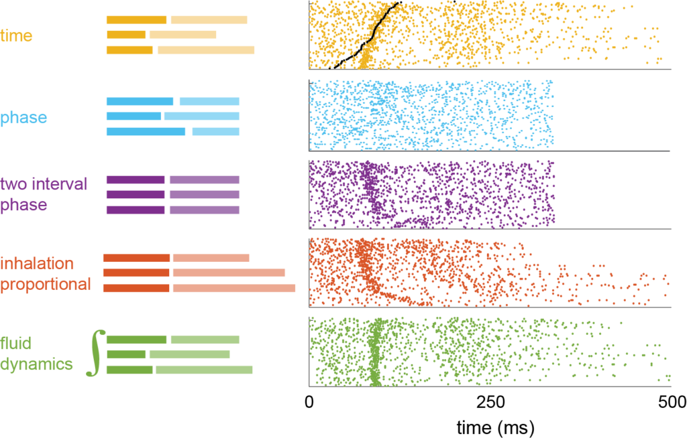
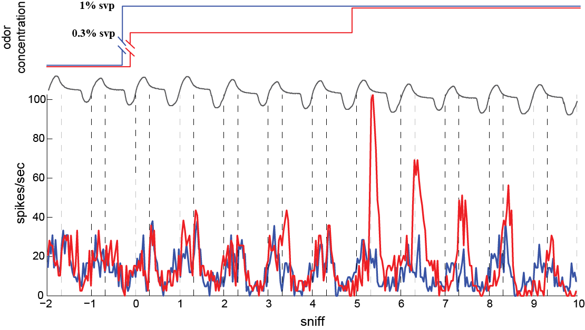

Olfactory Research

Coding of perceived odor intensity
One of the aims of systems neuroscience is to link neural activity in
different stages of brain processing with specific sensations or percepts.
This has been accomplished for our senses of touch and vision,not for our
sense of smell, or olfaction. To better understand olfaction, we started
with a basic sensation common to many sensory systems: intensity.

Concentration change detectors in olfaction
Olfactory navigation requires comparing of, odor concentration across samples
distributed in space and time. One potential strategy of odor source localization
is sequential (temporal) comparison: the animal chooses direction in the olfactory
surroundings by detecting concentration changes in time (ΔCt). Our results indicate that
olfactory cells explicitly compute ΔCt, providing a signal that may guide navigational
decisions in downstream olfactory circuits.
Sleep Research
 Sleep protects memories from catastrophic forgetting
Sleep protects memories from catastrophic forgetting
Despite the recent advances in neural networks, they still suffer from catastrophic
forgetting - the network loses its generalization on a previous task after being trained
on a new one. New research suggests that "placing neural network to sleep" may solve the
catastrophic forgetting issue.